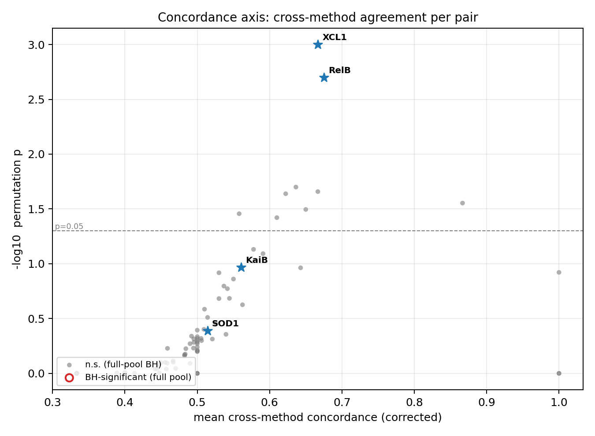
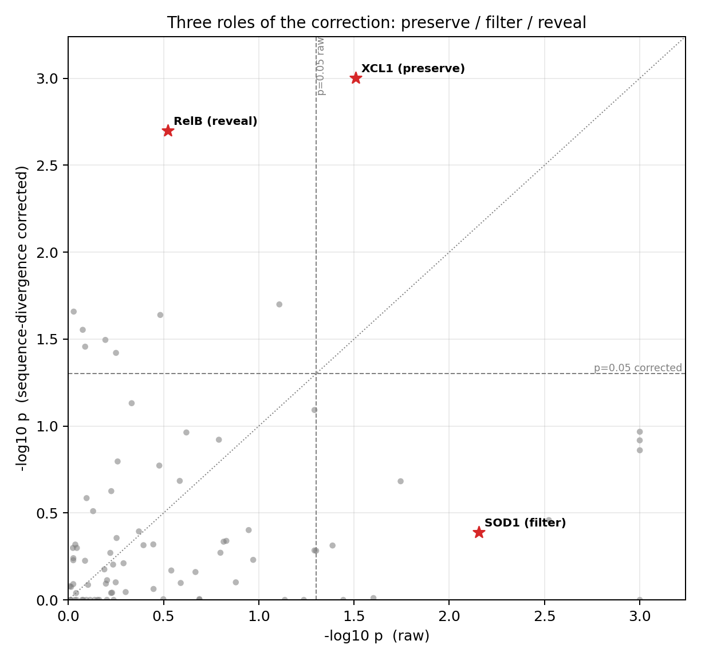
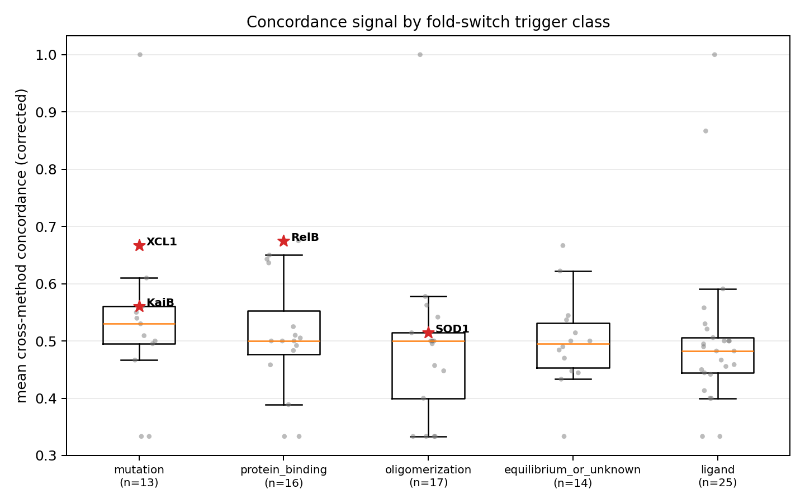

Global Analysis — Fold-Switch Evolution
Cross-pair summary of the 8-method fold-switch analysis
(AF2, AF3, ESMFold2, Boltz-2, ΔΔG, MSA-Transformer, CCMpred, S4PRED) over the
fold-switching pair set. Each figure is described above it.
Per-pair cluster distribution in the fold-1/fold-2 plane
Each panel is one method; each ELLIPSE is one fold-switch pair — a 1σ 2D-Gaussian fit to that pair's sequence clusters, plotting support for fold 1 (x) vs fold 2 (y) in the method's native metric (TM-score for AF2/AF3/ESMFold2/Boltz-2; −ΣΔΔG kcal/mol for DDG; SS H/E-composition similarity for S4PRED; contact recall for MSA-Transformer/CCMpred). The ellipse's ORIENTATION is the key: elongated PERPENDICULAR to the y=x diagonal means the pair's clusters split between the two folds — the fold-switching signal — whereas elongation ALONG the diagonal is shared variation with no fold discrimination, and a small round ellipse means low cluster diversity. Ellipses are colored by their perpendicular spread (brighter = stronger fold-switch signal), and the few highest-signal pairs per method are labelled. Pairs with fewer than 5 clusters are omitted (no stable covariance). Note: TM axes are comparable across pairs (0–1); for DDG/recall the absolute position is pair-specific, so read orientation, not location.

Concordance axis — cross-method agreement per pair
The second analysis axis (the one that yields hits): for each pair, how strongly do the orthogonal methods AGREE on a per-cluster fold preference. x = mean cross-method concordance (sequence-divergence corrected); y = −log10 permutation p. Pairs passing full-pool BH are ringed; the four experimentally validated fold-switchers are starred. KaiB is strongly concordant; XCL1 and RelB are the within-class (stratified-BH) recoveries — see the trigger-class figure below.

Three roles of the sequence-divergence correction
Per pair, significance before (x) vs after (y) correcting for cluster-to-query sequence divergence. Relative to the p=0.05 lines: top-right = significant both ways (PRESERVE — a true signal survives, e.g. XCL1), bottom-right = significant only before (FILTER — a divergence-driven false positive removed, e.g. SOD1), top-left = significant only after (REVEAL — a real signal unmasked by the correction, e.g. RelB). These three canonical cases anchor the correction's behaviour.

Concordance signal by fold-switch trigger class
Corrected concordance distribution within each biological trigger class (ligand / oligomerization / protein-binding / equilibrium / mutation), the basis for the stratified (within-class) BH test. Validated positives are starred in their classes — XCL1 in mutation, RelB in protein-binding, SOD1 in oligomerization — showing how stratifying by trigger recovers hits that the full-pool test misses.

Phylogenetic clade signal — method × pair
Sequence-divergence-corrected clade signal (Moran's I_norm) for every method (columns) and fold-switch pair (rows). Red = clusters that prefer the same fold are phylogenetically grouped (clade-structured); blue = anti-structured; white ≈ none. Rows are sorted by the median signal across methods (robust to the sparse, noisy contact-based methods), so the most clade-structured pairs sit at the top. Signal is weak overall — few cells exceed I_norm ≈ 0.2.

Method × method agreement on clade signal
Spearman correlation between methods of their per-pair clade signal. High values mean two methods light up on the same pairs. Only the structure predictors (AF2/AF3/Boltz-2/ESMFold2) correlate appreciably; ΔΔG, MSA-Transformer, CCMpred and S4PRED are largely orthogonal, i.e. they contribute independent evidence.

Clade-signal effect size, per method
Distribution across pairs of the clade-signal effect size (Moran's I_norm) for each method. Boxes near zero indicate little systematic clade structure; ΔΔG shows the widest positive tail. Because n ≈ 100 clusters makes the permutation test overpowered, we rank methods by effect size here rather than by significance counts.

Cross-method correlation of raw fold preference
Spearman correlation of the raw per-cluster fold preference (centered TM difference), pooled across all clusters and pairs — a signal-level companion to the clade-signal correlation above. AF2 and AF3 share training bias (highest correlation); every other method pair is near zero, confirming the methods supply largely independent evidence (most orthogonal: S4PRED).